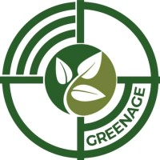
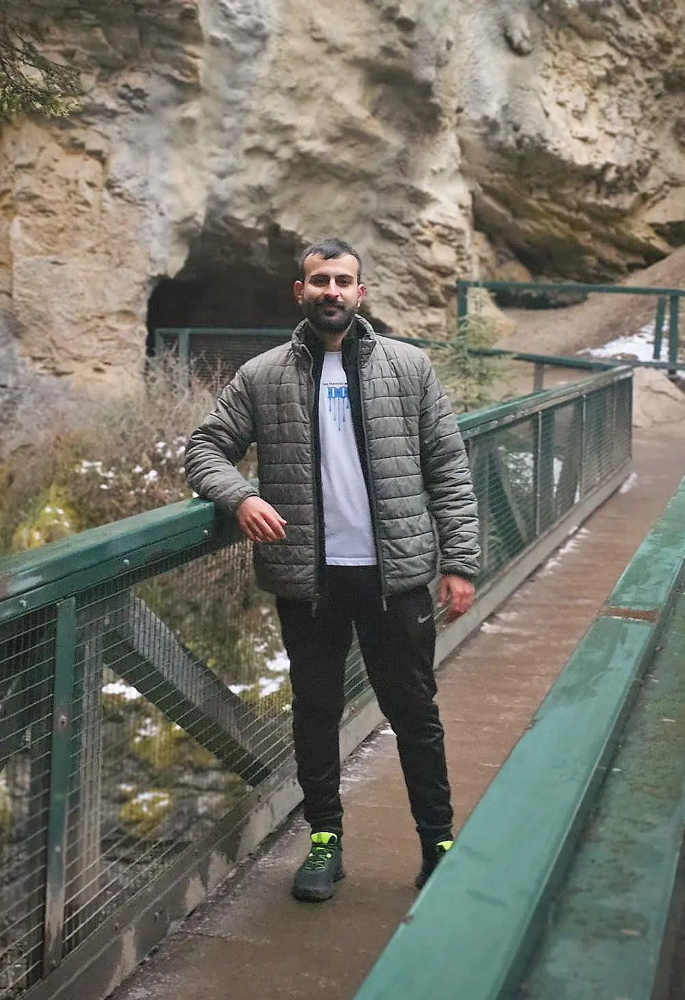
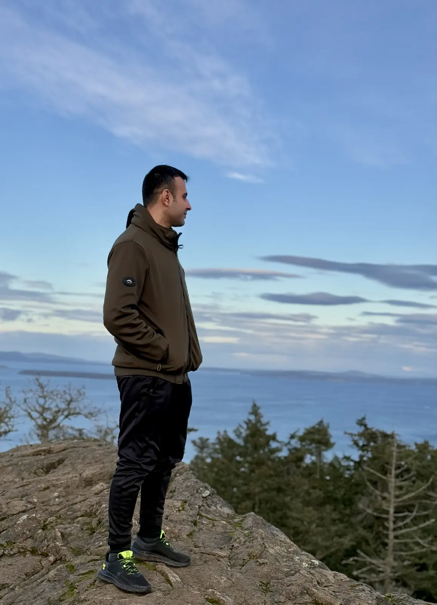
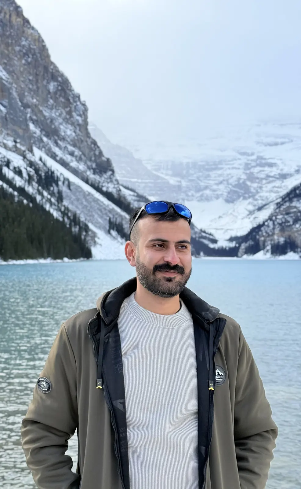
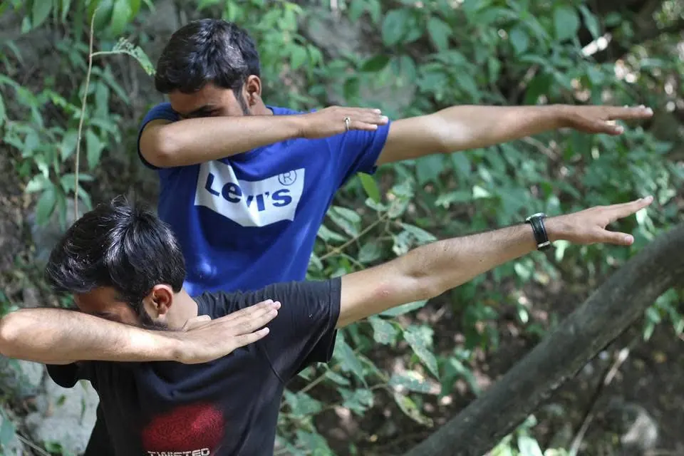
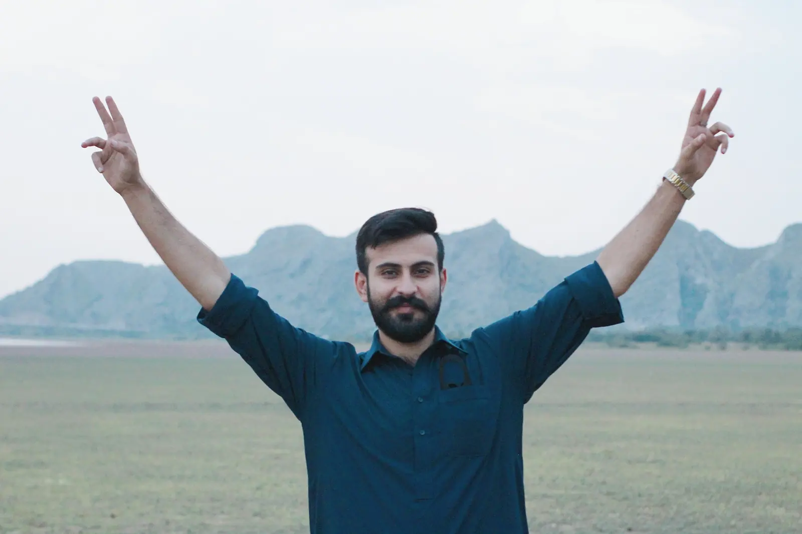

I am a GIS professional in Canada with over four years of applied experience and a Master of Geographic Information Systems from the University of Calgary. I am based in Victoria and looking for GIS opportunities across Canada. My work has covered land records, franchise territories, environmental analysis and public transit. I use spatial analysis, cartography and programming to answer practical questions, and build GIS automation tools for tasks that need to be repeated.
I began with field and mapping work in Pakistan, then spent nearly three years working on franchise territories for an Australian consultancy before moving to Canada for my master’s degree.
I studied access to fresh food in Calgary using walking routes and scheduled public transit. I combined streets, stops, timetables and destination data in a network that accounted for waiting, transfers and the walking portions of each journey.
For a departure at 11 a.m. on April 1, 2026, with a 45 minute travel limit, 33,212 residents lived in areas classified as having poor or no access. I built an Experience Builder application for exploring those results and maintained and published the supporting layers through ArcGIS Enterprise.
BC Ministry of Water, Land and Resource Stewardship
Volunteer Student Research Assistant
I prepared maps and charts for economists and policy analysts, including comparisons of greenhouse gas emissions across Canadian provinces. I also calculated forest area inside and outside Old Growth Management Areas and other protected areas using provincial forest and boundary data.
The work involved checking overlaps and area totals, turning them into percentages, and revising maps and figures for internal briefings. I used ArcGIS Pro, Python and R to prepare the analysis and supporting graphics.
Franchise Ready
GIS Analyst
I delivered more than 105 franchise territory projects for clients with different markets, customer groups and service requirements. I worked from the initial criteria through data preparation, territory design, review and delivery in maps, reports and web applications.
Alongside the project work, I built reusable demographic and business location datasets, automated recurring tasks with Python and ArcPy, and coordinated and reviewed work for two GIS assistants. I also helped clients access and use their published territory maps.

Greenage Services
GIS Associate
I helped convert paper and cloth cadastral records into parcel datasets for a government land digitization project. The work combined scanned records, imagery, CAD drawings and field control points, with georeferencing and digitizing in ArcMap and QGIS.
Thousands of unsorted scans were slowing the team down. I wrote a Python and OpenCV routine that read locality text and sorted the sheets into the right folders, then added scripts for production reporting and attribute checks.
MER Solutions
GIS Technician
I supported the Benazir Income Support Programme household survey with boundary maps, field maps and Survey123 forms. I also conducted household interviews and linked the collected records to their mapped locations.
Being involved in fieldwork helped me see where questions and forms needed adjustment. I revised field options and validation rules using feedback from the survey team, and checked the spatial and household information used in reporting.
Education
Master of Geographic Information Systems
University of Calgary
August 2024 to May 2026
Graduate coursework in Environmental Science
Bahria University, Islamabad
2023 · 24 credits completed
BSc Geoinformatics and Earth Observation
Pir Meher Ali Shah Arid Agriculture University
September 2016 to October 2020
What I work with
Spatial analysis
Service areas, transit networks, territory design and environmental overlays. I work mainly in ArcGIS Pro, with PostGIS and pgRouting for database and routing projects.
GIS programming
Python and ArcPy tools for recurring GIS work, from sorting scanned maps and checking attributes to producing reports and reviewing generated geoprocessing commands.
Data and fieldwork
Survey123 forms, household interviews, RTK control points, cadastral digitizing and versioned enterprise editing. I have worked with both field observations and legacy records.
Maps and applications
Reference and thematic maps, charts, web maps and Experience Builder applications. I adapt the level of detail for clients, field teams and readers outside GIS.
Tools and technologies
These are the tools I’ve used across work and projects, with additional training listed separately.
Desktop GIS and spatial analysis
ArcGIS Pro · ArcMap · QGIS · ArcGIS Network Analyst · ArcGIS Business Analyst · ArcGIS Spatial Analyst · ArcGIS ModelBuilder · ArcGIS Public Transit Data Model
Esri web GIS and field tools
ArcGIS Enterprise for data editing and publishing · ArcGIS Enterprise Portal · ArcGIS Online · ArcGIS Dashboards · ArcGIS Experience Builder · ArcGIS Survey123 · RTK GPS
Programming and application development
Python · ArcPy · SQL · JavaScript · HTML · CSS · R · Flask · FastAPI for service architecture · PySide6 / Qt · Tkinter
Spatial databases and data processing
PostgreSQL · PostGIS · pgRouting · File and enterprise geodatabases · FME Workbench, including AutoCAD drawing conversion · GDAL · GeoPandas · Shapely · Rasterio · osm2pgsql · Overpass Turbo · Google Maps geocoding and directions APIs · OpenCV and OCR
Data analysis and reporting
pandas · NumPy · scikit-learn · statsmodels · mlxtend · Matplotlib · ReportLab · Jupyter Notebook · Microsoft Excel · Google Sheets · Microsoft Office
Remote sensing and AI tools
Google Earth Engine · ENVI · PyTorch · CUDA · Ultralytics YOLO · Segment Anything Model and samgeo for workflow design · OpenAI API · Ollama · GPT-5 · Llama 3.1
ArcGIS StoryMaps · ArcGIS Field Maps · Global Mapper · ERDAS Imagine · Mapbox GL JS · Mapbox Studio · MapTiler · GeoServer · Tippecanoe
Outside work
Outside work, I enjoy exploring new places and spending time outdoors. These are a few moments from walks, hikes and trips in British Columbia, Alberta and Pakistan.
Ogden Point Breakwater, Victoria, BC

Cave and Basin, Banff, Alberta

Mount Douglas, Vancouver Island, BC

Lake Louise, Banff National Park

Trail 5, Islamabad, Pakistan

Namal Lake, Mianwali, Pakistan
Get in touch
I’m looking for GIS opportunities across Canada. You can reach me by email or on LinkedIn.